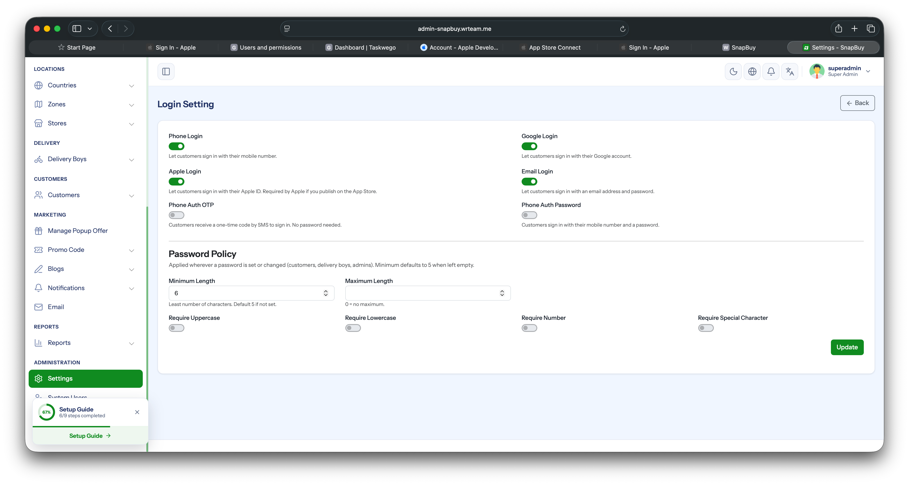
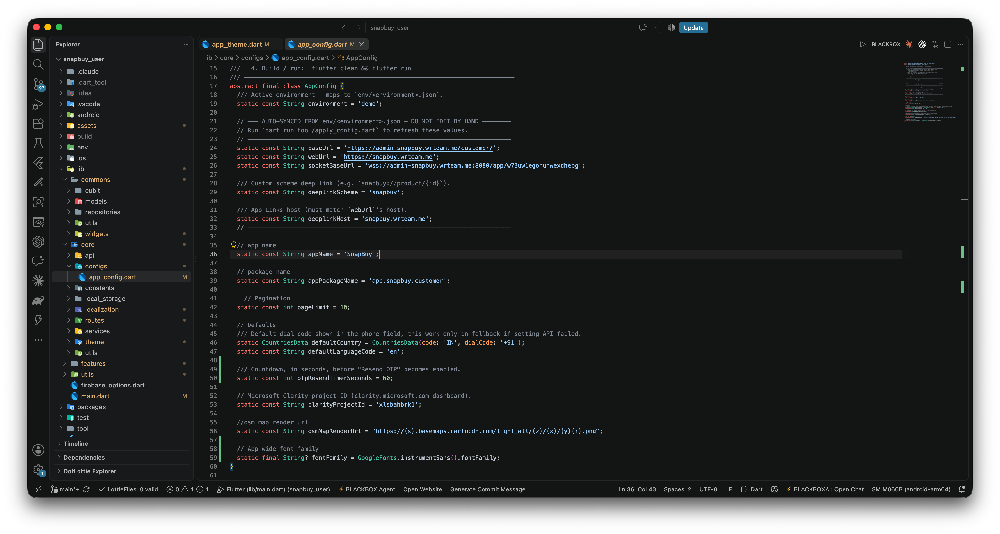

Configure Auth Methods & Default Country
Both the allowed login methods and the default country shown in the country picker (used during phone-number login) are controlled from a single admin-panel screen.
How to Access
- Log in to your Admin Panel.
- Navigate to Settings → General -> Login Setting.

Allowed Authentication Methods
In the Allowed Authentication Methods section:
- Select the login methods you want to enable (Email, Google, Apple, Phone.).
- Deselect any method you want to hide from the app.
- Click Save — the app fetches the updated list on next launch and shows only the enabled login options.
Tip
Each enabled method must also be fully configured in Firebase (e.g., Google Sign-In credentials, Apple Sign-In key, Phone OTP billing). Otherwise the option will appear in the app but fail at runtime.
Default Country
In the Default Country field on the same page:
- Select the country you want to set as the default in the app's country picker.
- This affects the phone-number country code prefix shown to users.
- Click Save to apply.
Users can still change the country manually inside the app — this setting only controls the initial default.
Fallback Default in App Code
As a safety net, a default country code is hardcoded in the app's config file. This value is only used when the settings API call fails (e.g., no internet on first launch).
- Open
lib/core/configs/app_config.dart. - Update the
defaultCountryconstant to the country code you want as fallback.

Info
The admin-panel default (above) is the primary source of truth. The app_config.dart value is only a fallback for offline / API-failure scenarios.